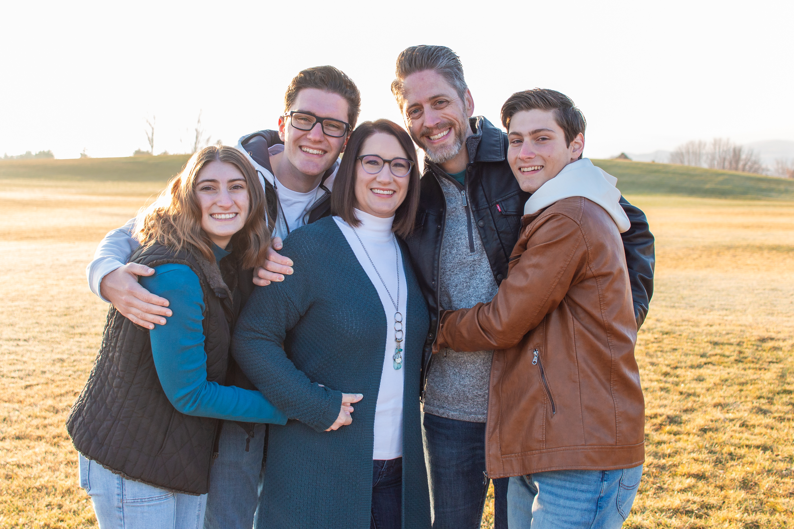

About Me
For over two decades, I've spent my days teaching the nuances of rhythm, harmony, and expression as a private piano instructor. My career spans two worlds that might look different on the surface, but share the same core foundation: creativity, patience, and clear communication. Whether I'm designing a seamless, user-friendly website or helping a piano student mast a challenging piece, I love taking complex problems and turning them into clear, beautiful results.
Family Life

Outside of teaching piano, building websites, and managing production workflows, my most important role is being a mom. Raising my family brings incredible joy, grounding me every day and giving me the patience, resilience, and perspective I bring to everything else I do.